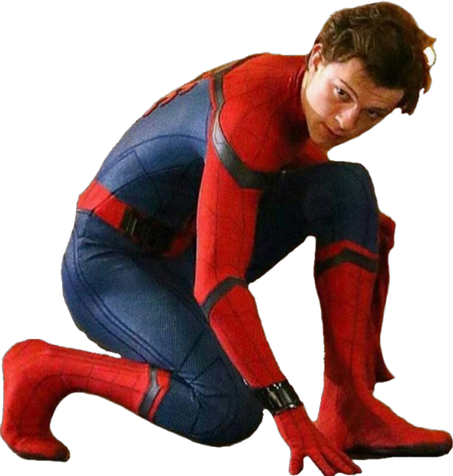
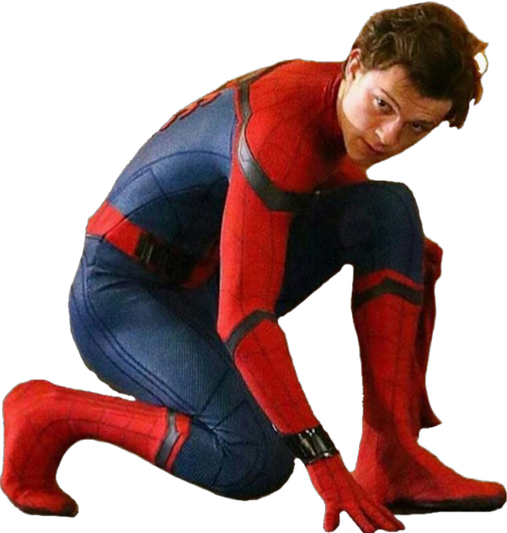
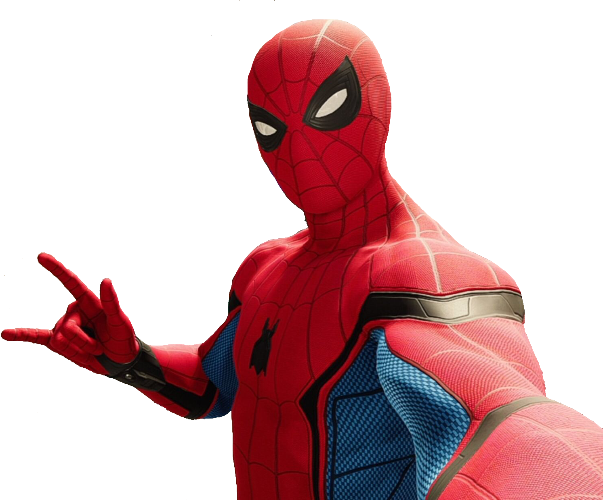
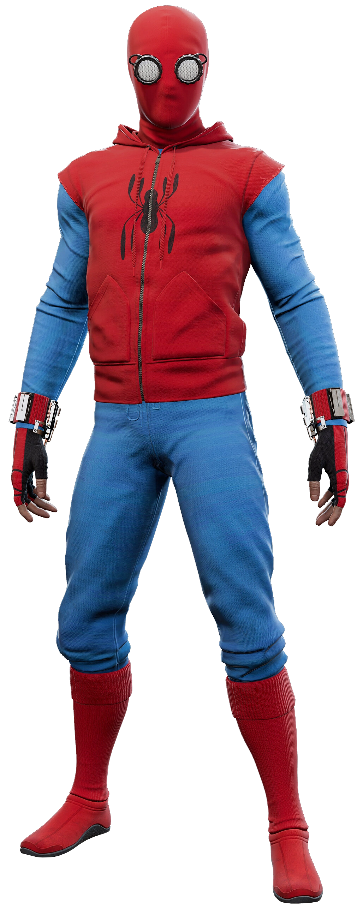
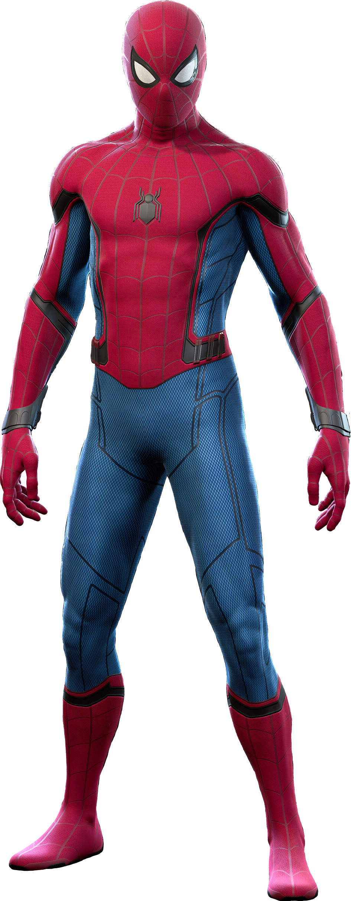
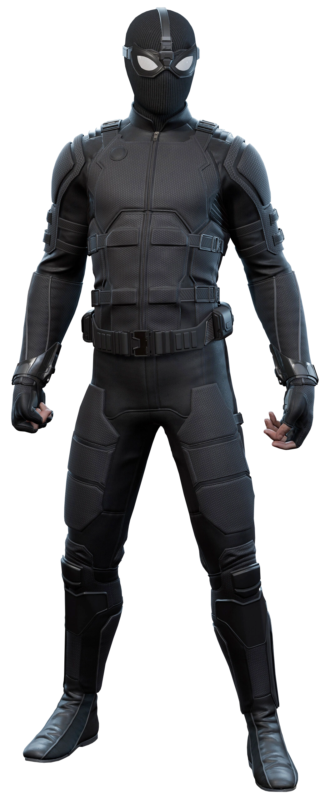
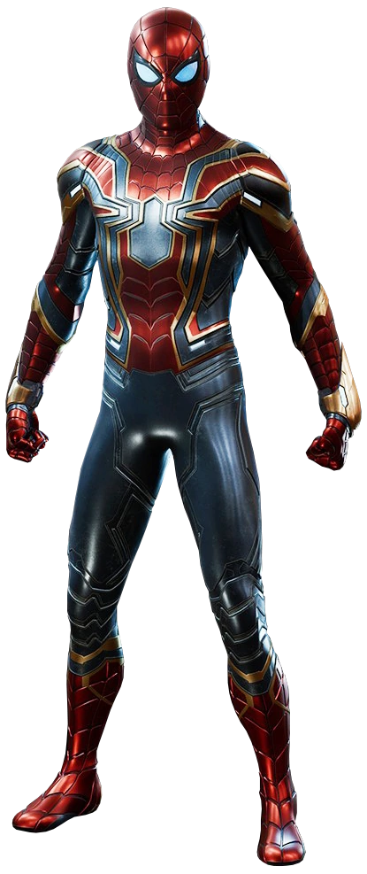
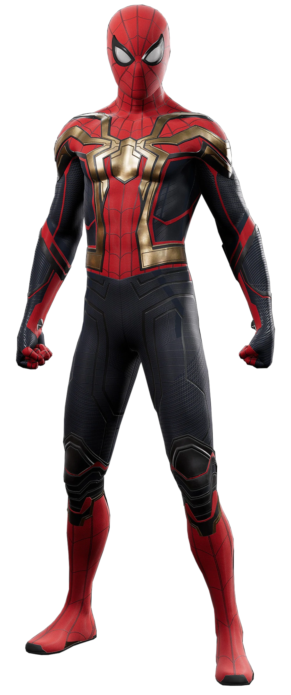

The Spider-Man |
||
|  |
By far the biggest Spider-man iteration to hit the big screen, Tom Holland's Spiderman is latest and current iteration of Spiderman in the movies. A huge reason for this mega-stardom is that this iteration is connected to the MCU; The home of all the Marvel superheroes in cinema. The Spider-man character was finally in it's homeworld, and it gave the character a massive boost. This iteration of Spider-Man is featured in over 6 different movies, over eight years! Tom's character also got a big step-up in the costumes department, as his version of the character has over 7 different suits. You can find some of his more iconic suits below: |
|
| 
Homemade suit |

S.T.A.R.K suit |

Stealth suit |

Iron-Spider suit |

Integrated suit |
The MCU Adventure |
|
|
Spider-Man has had a long journey in the Marvel Cinematic Universe, let's take a look at the movies that he has appeared in, during his advernture in this universe:
|
|